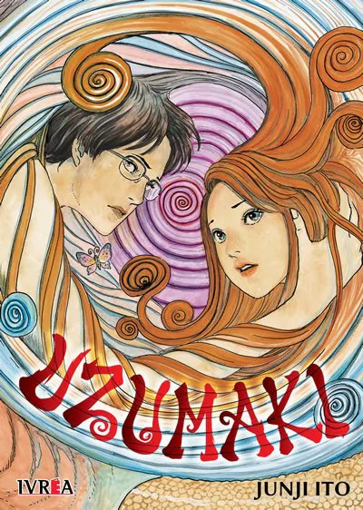

Uzumaki

Esta historia está compuesta por varias historias cortas y autoconclusivas que a su vez se interconectan para narrar una
mucho más grande y perturbadora, transcurre en la pequeña ciudad japonesa de Kurouzu y se centra en la insana obsesión
con las espirales, remolinos y todas sus variedades que va chupando a sus habitantes, y cómo se sumergen gradualmente en
la locura y la autodestrucción concéntrica.
La historia está narrada desde el punto de vista de Kirie Goshima, una adolescente que ha vivido toda su vida en este
–aparente- tranquilo pueblo y es testigo del temor hacia los espirales que va consumiendo a sus vecinos, sus compañeros y
hasta a su propia mente.